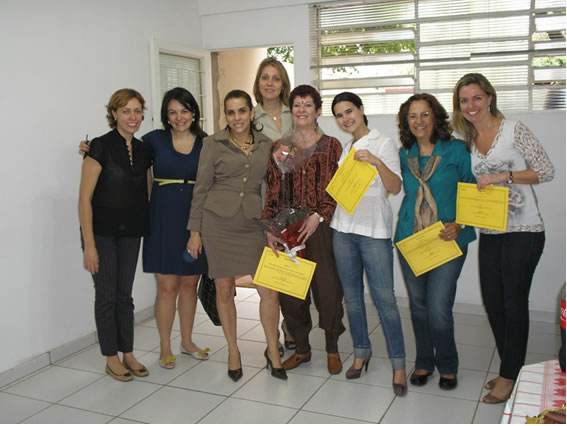
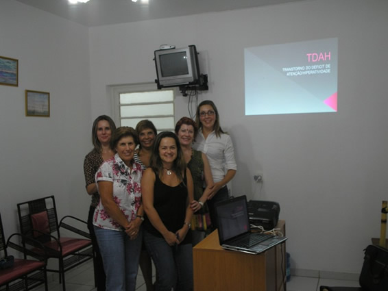
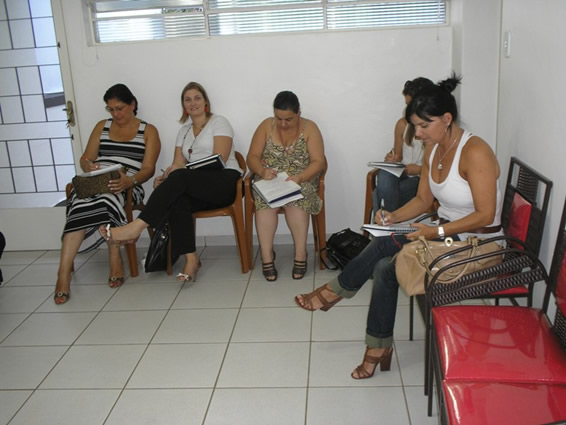
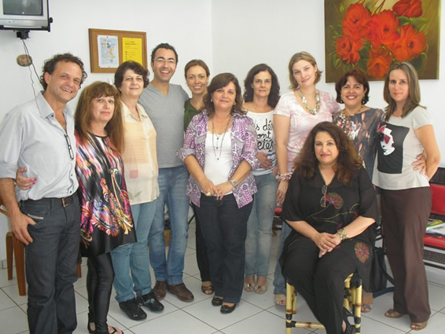

31/07/2010 - Lançamento e Entrega do Livro Vermelho pela Ed. Vozes.
Salete Biagioni, recebendo o Livro Vermelho, entre Aniele e Luis da Ed. Vozes.
Salete Biagioni entregando o Livro Vermelho para Cintia Travassos.
Da Esquerda Para a Direita: Cintia Travassos, Cristiane Reda, Salete Biagioni e Luis da Ed. Vozes.
Encerramento do Curso de Mitologia Grega
Alunas do período da manhã - da esquerda para a direita: Vanessa psicóloga que coordenou a vivência de dança circular, Carina Brantegani Giradelli (com Helena), Rita de Cássia Leite de Barros, Cíntia Viviane da Costa (atrás), Cíntia Travassos (docente), Gabriela T. G. Zóia, Vera Liz Verde Selva, Daniela L. Vial.
Encerramento do Curso de Mitologia Grega
Cíntia Travassos (docente)
Salete Biagioni (coordenadora)
Encerramento do Curso de Mitologia Grega – Vivência de Dança Circular
Encerramento do Curso de Mitologia Grega – Vivência de Dança Circular.
Curso de TDAH
Curso de TDAH (Transtorno de Déficit de Atenção e Hiperatividade), realizado em Fevereiro de 2011 oferecido pela Dra. Ana Cláudia Ceravolo de Oliveira (psiquiatra). Participantes do grupo da manhã: Maria Lúcia Meirelles dos Santos, e Márcia C. P. Rubin, na frente. Atrás; Izabel C de Sousa, Iracema, Cintia Travassos e Dra. Ana Cláudia.
Curso de TDAH (Transtorno de Déficit de Atenção e Hiperatividade), realizado em Fevereiro de 2011 oferecido pela Dra. Ana Cláudia Ceravolo de Oliveira (psiquiatra). Participantes do grupo da tarde; Rosangela Ruiz, Meibel Farah.
Curso de TDAH (Transtorno de Déficit de Atenção e Hiperatividade), realizado em Fevereiro de 2011 oferecido pela Dra. Ana Cláudia Ceravolo de Oliveira (psiquiatra). Participantes do grupo da tarde: Maria Soledad F. Tirso, Viviam R. Fernandes, Cristiane R. Nogueira, Fabiana Texeira, Flavia Navarro.
Encontro do Grupo de Filosofia
Encontro do Grupo de Filosofia realizado em Janeiro de 2011 em que esteve presente nosso querido Magnus de Macedo para nos contar de sua jornada na Inglaterra onde cursa a Formação Junguiana. Sentada: Salete Biagioni. Em pé: da esquerda para a direita: Magnus de Macedo, Sueli Dian, Meibel Farah, Ronei Madureira, Vanessa J. Pavan, Eliana Zaccaria , Cirstina Monte, Viviam R. Fernandes, Rosangela Ruiz e Isabel C. de Sousa.
{kind=link}
{kind=link}
{kind=link}
{kind=link}
{kind=link}
{kind=link}
{kind=link}
{kind=link}
{kind=link}
{kind=link}
{kind=link}